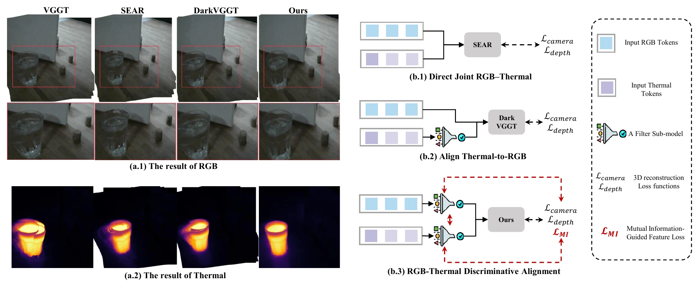
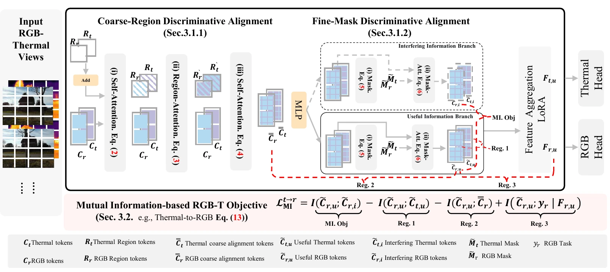
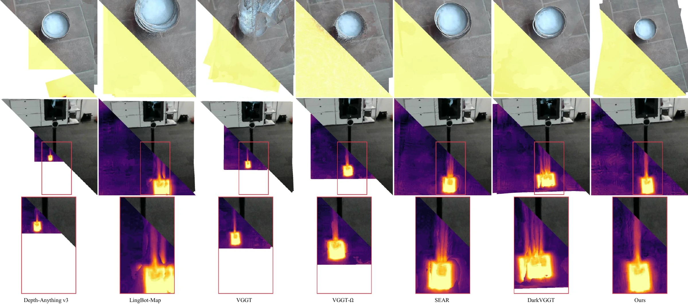

01Motivation Animation
A visual explanation of how RGB background cues and thermal surface cues can describe different physical depths.
Conceptual animation: observations of a glass cup, separate RGB and thermal point clouds, and the propagation of conflicting geometric information during alignment.
02Abstract
The same object can exhibit different structural responses in RGB and thermal images. These differences introduce conflicting geometric cues and make feed-forward RGB–thermal 3D reconstruction difficult. Enforcing feature consistency under geometric supervision alone can prioritize RGB reconstruction at the expense of thermal reconstruction.
We introduce MIDA, a Mutual Information-Guided RGB–Thermal Discriminative Alignment framework. Its coarse-to-fine alignment first uses regional context to select cross-modal features, then refines this selection with fine-grained masked attention. A mutual information-based objective provides explicit feature-level supervision, helping each reconstruction branch retain useful information and separate it from interference.
Experiments on ViViD++, STheReO, SEAR-Data-I, and SEAR-Data-II evaluate depth and camera pose estimation for both modalities under paired and unpaired RGB-T inputs.
03Conflicting Structural Cues
Glass can be transparent in RGB images and opaque in long-wave thermal images. An RGB observation may contain background geometry seen through the glass, while the thermal observation captures its surface. Aligning these responses without distinguishing their roles can introduce errors into either reconstruction branch.

04Methodology
MIDA selects useful cross-modal information at two scales and supervises this selection at the feature level. The RGB and thermal branches estimate their own geometry from paired or unpaired views of the same scene.

Coarse-Region Discriminative Alignment
Learnable region tokens aggregate context across views within each modality. Mask-gated cross-attention selectively exchanges regional information, which is then redistributed to content tokens.
Fine-Mask Discriminative Alignment
Independent mask heads refine attention at the token level, separating useful surface cues from interfering local responses within the coarsely aligned features.
Task-Relevant Feature Supervision
The mutual information objective separates useful and interfering components, encourages shared useful information across modalities, and preserves geometric cues through feature aggregation.
ℒtotal = ℒgeometry + β (ℒMIRGB→Thermal + ℒMIThermal→RGB)
Camera pose and depth losses supervise geometry. The bidirectional mutual information objective guides which cross-modal information is retained.
05Reconstruction Results
Qualitative comparisons show the RGB and thermal appearance of reconstructed geometry, including challenging object boundaries and thin structures.
